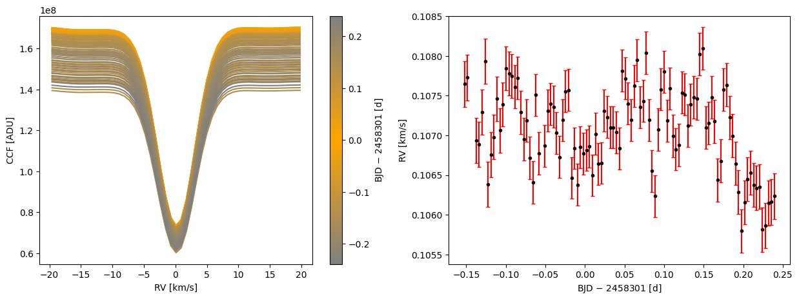
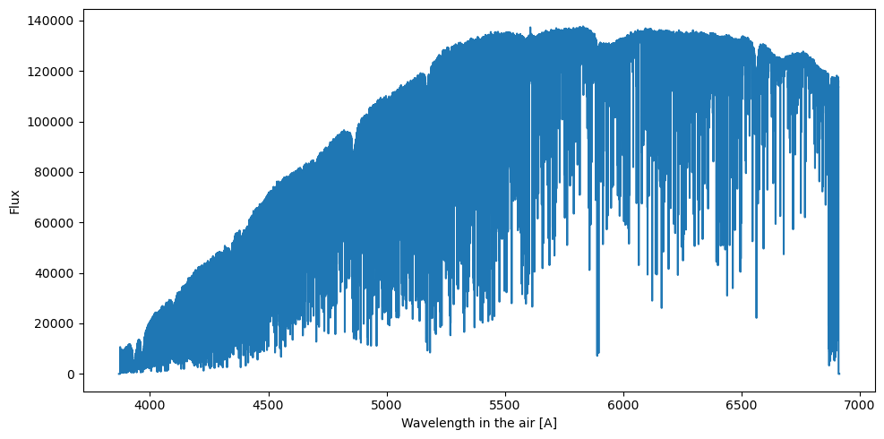

How to download HARPS-N Solar data from DACE
This tutorial
was originally developed for the Sun-as-a-Star Splinter at the Extremely
Precise Radial Velocities Sixth Workshop (EPRV6) in June 2024, main contrutors: Khaled Al Moulla and
Ryan Rubenzhal. It also includes extracts from another HARPS-N solar data downaload
tutorial
developed by Xavier Dumusque.
The Data & Analysis Center for Exoplanets DACE
is a web platform developed by the University of Geneva to provide access to a variety of
exoplanet-related data. It includes a query python package and extensive documentation and tutorials.
To install the DACE query package use:
pip install dace_query
Import packages and set up output directory
from astropy.io import fits
from astropy.time import Time
from dace_query.sun import Sun
from glob import glob
import matplotlib.cm as cm
from matplotlib.colors import LinearSegmentedColormap, Normalize
import matplotlib.pyplot as plt
import numpy as np
import os
import tarfile
output_directory = 'sun_harpn_ccf/'
output_directory_s2d = 'sun_harpn_s2d/'
os.makedirs(output_directory, exist_ok=True)
Define range of time and basic parameter, then query the HARPS-N solar files and download them. Any DRS-produced
file can be downloaded, from 1d spectra to radial velocities. For this tutorial we will be downloading the CCFs
as FITS files.
Tip: If you don't know the filter keywords by heart, make a query based on the dates only and then list all the
dictionary keywords from the query output.
# Filter: Barycentric Julian Date (BJD)
obj_date_bjd_min = Time('2018-07-01T00:00:00').jd-2400000
obj_date_bjd_max = Time('2018-07-01T23:59:59').jd-2400000
# Filter: Quality flag
spectro_analysis_qualflag_min = 0.95
spectro_analysis_qualflag_max = 1.00
# Filter dictionary
filters = {
'obj_date_bjd' : {'min': obj_date_bjd_min , 'max': obj_date_bjd_max },
'spectro_analysis_qualflag': {'min': spectro_analysis_qualflag_min, 'max': spectro_analysis_qualflag_max},
}
# Query
# (optional: only to inspect the output before downloading it)
sun_query = Sun.query_database(filters=filters, sort={'obj_date_bjd': 'asc'})
# Download CCF files
Sun.download('ccf', filters=filters, output_directory=output_directory, output_filename='temp.tar', compressed=False)
# Download S1D files
Sun.download('s1d', filters=filters, output_directory=output_directory, output_filename="s1d_temp.tar" % file_rootpath[:-5],)
# Unzip
tar = tarfile.open(output_directory+'temp.tar', 'r:')
tar.extractall(output_directory)
tar.close()
# Delete temporary file
os.remove(output_directory+'temp.tar')
tar = tarfile.open(output_directory+'s1d_temp.tar', 'r:')
tar.extractall(output_directory)
tar.close()
# Delete temporary file
os.remove(output_directory_s2d+'s1d_temp.tar')
To extract the relevant information, loop over the files and extract the needed data from
the headers. We here include the CCF and the RV extraction.
files = sorted(glob(output_directory+'**/*.fits', recursive=True))
Nfile = len(files)
# Get CCF velocity grid from first file
hdul = fits.open(files[0])
Ngrid = hdul[1].data.shape[1]
grid_del = hdul[0].header['HIERARCH TNG RV STEP']
grid_min = hdul[0].header['HIERARCH TNG RV START']
grid_val = np.arange(Ngrid)*grid_del+grid_min
# Empty arrays for CCF variables
ccf_val = np.empty((Nfile,Ngrid))
ccf_err = np.empty((Nfile,Ngrid))
# Empty arrays for RV variables
time_val = np.empty(Nfile)
vrad_val = np.empty(Nfile)
vrad_err = np.empty(Nfile)
# Loop files
for i in range(Nfile):
# Open FITS file
hdul = fits.open(files[i])
# Extract CCF variables
ccf_val[i] = hdul[1].data[-1] # last row contains the order-combined CCF values
ccf_err[i] = hdul[2].data[-1] # last row contains the order-combined CCF errors
# Extract RV variables
header = hdul[0].header
time_val[i] = header['HIERARCH TNG QC BJD']
vrad_val[i] = header['HIERARCH TNG QC CCF RV']
vrad_err[i] = header['HIERARCH TNG QC CCF RV ERROR']
# Close FITS file
hdul.close()
Example plot of the extracted data.
# Normalization
cval = time_val - int(time_val[-1])
vmax = np.max([np.abs(np.nanmin(cval)),np.abs(np.nanmax(cval))])
norm = Normalize(vmin=-vmax, vmax=vmax)
# Color map
values = [0.0,0.5,1.0]
colors = ['grey', 'orange', 'grey']
cmap = LinearSegmentedColormap.from_list('rg', list(zip(values,colors)), N=256)
# Colors
cmsm = cm.ScalarMappable(norm=norm, cmap=cmap)
color = cmsm.to_rgba(cval)
# Figure
fig, axs = plt.subplots(1,2, figsize=(15,5))
# CCF time series
ax = axs[0]
for i in range(Nfile):
ax.errorbar(grid_val, ccf_val[i], ccf_err[i], ls='-', color=color[i], ecolor='r')
ax.set_xlabel('RV [km/s]')
ax.set_ylabel('CCF [ADU]')
cb = plt.colorbar(cmsm, ax=ax)
cb.set_label(f'BJD $-$ {int(time_val[-1])} [d]')
# RV time series
ax = axs[1]
ax.errorbar(time_val - int(time_val[-1]), vrad_val, vrad_err, fmt='.', color='k', ecolor='r', capsize=2)
ax.set_xlabel(f'BJD $-$ {int(time_val[-1])} [d]')
ax.set_ylabel('RV [km/s]')
# Show
plt.show()

Extracting and plotting an order of 2D spectra.
s1d = fits.getdata(str(output_directory_s1d+"r.HARPN.2018-07-01T13-20-27.252_S1D_A.fits"))
plt.figure(figsize=(10, 5))
plt.plot(s1d["wavelength_air"], s1d["flux"])
plt.xlabel("Wavelength in the air [A]")
plt.ylabel("Flux")
